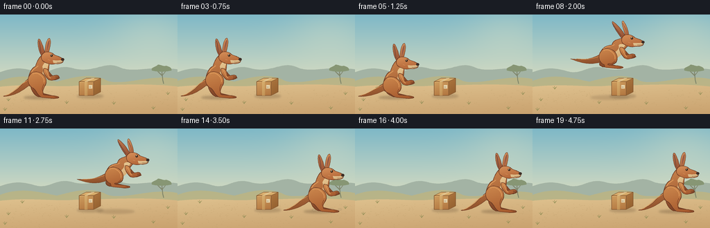
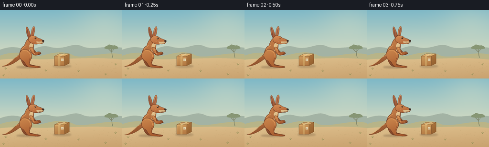

CODING AGENTS AS PIXEL WORLD MODELS
traex/GPT-6.1-Sol · dynamic_spatial_relationship_0032
点击播放 · 原生 RGB 像素
逐轮保存的候选
回放视频、检查图与代码变化。
每份候选均可单独播放。实际图片检查记录在下方工具轨迹中。
候选 01播放与检查图
点击播放 · 原生 RGB 像素


展开代码变化
--- 上一保存版本
+++ 本次保存版本
@@ -0,0 +1,197 @@
+"""Procedurally painted RGB animation; no source images or external assets."""
+from pathlib import Path
+import json, math
+import numpy as np
+from PIL import Image, ImageDraw, ImageFilter
+import artifact_io
+
+ROOT = Path(__file__).resolve().parent
+SPEC = json.loads((ROOT / 'task_spec.json').read_text())
+W,H = SPEC['width'],SPEC['height']
+S=4
+rng=np.random.default_rng(321)
+
+def xy(p): return (round(p[0]*S),round(p[1]*S))
+def path_points(cmds):
+ pts=[]; cur=None; first=None
+ for cmd in cmds:
+ if cmd[0]=='M':
+ cur=cmd[1]; first=cur; pts.append(cur)
+ elif cmd[0]=='L':
+ cur=cmd[1]; pts.append(cur)
+ elif cmd[0]=='C':
+ a,b,end=cmd[1:]; start=cur
+ steps=max(10,int(sum(math.dist(u,v) for u,v in [(start,a),(a,b),(b,end)])*.75))
+ for t in np.linspace(0,1,steps+1)[1:]:
+ p=tuple((1-t)**3*start[k]+3*(1-t)**2*t*a[k]+3*(1-t)*t*t*b[k]+t**3*end[k] for k in (0,1))
+ pts.append(p)
+ cur=end
+ elif cmd[0]=='Z': pts.append(first);cur=first
+ return pts
+
+def shape(im,cmds,light,dark=None,outline=None,width=.6):
+ points=path_points(cmds); scaled=[xy(p) for p in points]
+ if dark is None:
+ ImageDraw.Draw(im).polygon(scaled,fill=light)
+ else:
+ mask=Image.new('L',im.size);ImageDraw.Draw(mask).polygon(scaled,fill=255)
+ p=np.array(points); ymin=p[:,1].min(); ymax=p[:,1].max(); xmin=p[:,0].min();xmax=p[:,0].max()
+ yy,xx=np.mgrid[:H*S,:W*S]
+ blend=np.clip(.75*(yy/S-ymin)/max(1,ymax-ymin)+.25*(xx/S-xmin)/max(1,xmax-xmin),0,1)
+ arr=np.asarray(light)[None,None,:]*(1-blend[:,:,None])+np.asarray(dark)[None,None,:]*blend[:,:,None]
+ im.paste(Image.fromarray(arr.astype(np.uint8)),(0,0),mask)
+ if outline:
+ ImageDraw.Draw(im).line(scaled,fill=outline,width=max(1,round(width*S)),joint='curve')
+
+def stroke(im,cmds,color,width=.6):
+ ImageDraw.Draw(im).line([xy(p) for p in path_points(cmds)],fill=color,width=max(1,round(width*S)),joint='curve')
+
+def ellipse(im,box,color):
+ ImageDraw.Draw(im).ellipse(tuple(round(v*S) for v in box),fill=color)
+
+def shadow(im,cx,cy,rx,ry,alpha):
+ lay=Image.new('RGBA',im.size)
+ ImageDraw.Draw(lay).ellipse(tuple(round(v*S) for v in (cx-rx,cy-ry,cx+rx,cy+ry)), fill=(81,56,37,alpha))
+ lay=lay.filter(ImageFilter.GaussianBlur(1.5*S))
+ im.paste(lay,(0,0),lay)
+
+# Warm Australian grassland, with a fixed view and restrained background detail.
+y,x=np.mgrid[0:H*S,0:W*S]
+yf=y/(H*S)
+top=np.array([126,184,199]);bottom=np.array([226,224,192])
+f=np.minimum(1,yf/.76)[...,None]
+arr=top[None,None,:]*(1-f)+bottom[None,None,:]*f
+# Broad golden glow, not a distracting hard-edged sun.
+glow=np.exp(-(((x/S-218)/60)**2+((y/S-26)/43)**2))
+arr=arr*(1-.21*glow[...,None])+np.array([255,241,197])*.21*glow[...,None]
+BACKGROUND=Image.fromarray(np.uint8(np.clip(arr,0,255)))
+d=ImageDraw.Draw(BACKGROUND)
+shape(BACKGROUND,[('M',(-5,85)),('C',(22,75),(32,77),(54,83)),('C',(73,86),(80,72),(103,77)),('C',(135,87),(150,65),(174,77)),('C',(197,85),(212,73),(263,80)),('L',(263,108)),('L',(-5,108)),('Z',)],(163,179,164))
+shape(BACKGROUND,[('M',(-5,98)),('C',(26,84),(53,91),(82,97)),('C',(105,91),(132,83),(155,96)),('C',(182,104),(223,83),(263,95)),('L',(263,123)),('L',(-5,123)),('Z',)],(182,180,137),(192,181,133))
+shape(BACKGROUND,[('M',(-5,105)),('C',(46,99),(76,106),(110,103)),('C',(152,103),(209,98),(263,105)),('L',(263,147)),('L',(-5,147)),('Z',)],(222,193,142),(200,160,109))
+# Distant acacia, on the far right; muted colors keep the action in focus.
+stroke(BACKGROUND,[('M',(236,100)),('C',(233,91),(235,86),(232,78))],(127,133,106),1.25)
+stroke(BACKGROUND,[('M',(234,89)),('L',(225,80)),('M',(234,88)),('L',(241,79))],(127,133,106),.75)
+shape(BACKGROUND,[('M',(219,81)),('C',(217,76),(225,76),(227,73)),('C',(231,71),(235,76),(239,74)),('C',(244,75),(248,77),(247,81)),('C',(237,83),(228,83),(219,81)),('Z',)],(135,150,116))
+# Fine irregular ground marks, sparse enough that feet and box remain legible.
+for _ in range(230):
+ gx=float(rng.uniform(0,W));gy=float(rng.uniform(109,144))
+ length=float(rng.uniform(.4,1.7)); col=(188+int(rng.integers(-8,9)),157,105)
+ stroke(BACKGROUND,[('M',(gx,gy)),('L',(gx+length,gy-.12))],col,.25)
+for gx,gy in [(12,125),(32,108),(96,129),(164,130),(242,116),(221,137),(7,139)]:
+ for off,ht in [(-2,3),(-.3,4.4),(1.1,2.8),(2.5,3.7)]:
+ stroke(BACKGROUND,[('M',(gx,gy)),('C',(gx+off*.4,gy-ht*.4),(gx+off,gy-ht*.8),(gx+off*1.2,gy-ht))],(145,142,86),.5)
+
+
+def draw_box(im):
+ shadow(im,130,118,19,3,57)
+ edge=(130,87,49)
+ shape(im,[('M',(114,97)),('L',(135,97)),('L',(135,117)),('L',(114,117)),('Z',)],(206,157,95),(177,117,63),edge,.65)
+ shape(im,[('M',(135,97)),('L',(145,92)),('L',(145,112)),('L',(135,117)),('Z',)],(173,118,63),(145,94,46),edge,.65)
+ shape(im,[('M',(114,97)),('L',(124,92)),('L',(145,92)),('L',(135,97)),('Z',)],(229,189,127),(203,156,89),edge,.65)
+ # Packing tape across the lid and down the front.
+ shape(im,[('M',(122,97)),('L',(132,92)),('L',(136,92)),('L',(126,97)),('Z',)],(235,209,155))
+ shape(im,[('M',(122,97)),('L',(126,97)),('L',(126,117)),('L',(122,117)),('Z',)],(217,177,113),(193,145,84))
+ stroke(im,[('M',(124,97)),('L',(134,92))],(152,116,72),.3)
+ stroke(im,[('M',(115,98)),('L',(121,98))],(236,191,124),.45)
+ # Small, unlettered shipping label.
+ shape(im,[('M',(128,102)),('L',(133,102)),('L',(133,107)),('L',(128,107)),('Z',)],(230,213,173))
+ for z in range(3): stroke(im,[('M',(129+z,104)),('L',(129+z,106))],(122,99,70),.27)
+
+
+def kangaroo(im,origin,air=0,crouch=0,blink=False,t=0):
+ ox,oy=origin
+ def P(x,y): return (ox+x,oy+y)
+ hip=(0,-23+8*crouch)
+ chest=(4+8*air,-43+8*crouch+3*air)
+ head=(12+14*air,-58+8*crouch+9*air)
+ def HP(x,y):return P(hip[0]+x,hip[1]+y)
+ def CP(x,y):return P(chest[0]+x,chest[1]+y)
+ def EP(x,y):return P(head[0]+x,head[1]+y)
+ edge=(103,55,34); light=(203,132,75); dark=(148,80,43)
+ # Heavy tapering tail: a defining kangaroo feature.
+ tailtip=P(-49-6*air,-1-21*air)
+ shape(im,[('M',HP(-7,-7)),('C',HP(-22,0),P(-27,-6-13*air),tailtip),('C',P(-52,-1-21*air),P(-34,2-13*air),HP(-13,7)),('C',HP(-2,11),HP(7,0),HP(-7,-7)),('Z',)],(188,117,67),(133,73,39),edge,.6)
+ stroke(im,[('M',HP(-10,-3)),('C',HP(-25,3),P(-34,-5-16*air),P(-46,-2-20*air))],(216,153,91),.8)
+ # The farther foot and shin are darker, and slightly offset.
+ ax=4-10*air; ay=-3-10*air
+ shape(im,[('M',HP(-7,-1)),('C',HP(2,-1),HP(8,6),P(ax,ay-3)),('L',P(ax+20,ay+2)),('C',P(ax+23,ay+5),P(ax+17,ay+5),P(ax-3,ay+3)),('C',P(ax-10,ay),HP(-14,8),HP(-7,-1)),('Z',)],(158,91,51),(119,62,36),edge,.65)
+ # Back forearm.
+ shape(im,[('M',CP(7,2)),('C',CP(16,8),CP(17,17),CP(26,13)),('L',CP(28,16)),('C',CP(19,22),CP(13,17),CP(8,11)),('Z',)],(150,86,48),(130,69,39),edge,.55)
+ tilt=-10*air
+ # Two long ears, individually shaded with dark pink inner panels.
+ shape(im,[('M',EP(-5,0)),('C',EP(-11,-7),EP(-13+tilt,-24),EP(-10+tilt,-26)),('C',EP(-7+tilt,-25),EP(-3,-12),EP(-1,-3)),('Z',)],(190,122,78),(147,77,48),edge,.6)
+ stroke(im,[('M',EP(-7,-5)),('C',EP(-8+tilt*.5,-13),EP(-9+tilt,-20),EP(-10+tilt,-23))],(123,74,58),1.35)
+ # Torso and long neck.
+ shape(im,[('M',HP(-10,8)),('C',HP(-17,-1),HP(-11,-18),CP(-7,-1)),('C',CP(-4,-11),EP(-9,1),EP(-5,-3)),('C',EP(0,-5),EP(8,0),EP(5,9)),('C',CP(12,0),CP(14,8),HP(10,-4)),('C',HP(18,7),HP(5,15),HP(-10,8)),('Z',)],(204,135,81),(158,88,45),edge,.75)
+ # Soft pale fur follows throat and belly, not a flat circular cartoon patch.
+ shape(im,[('M',EP(1,6)),('C',EP(8,6),CP(10,-3),CP(10,5)),('C',CP(9,16),HP(14,-4),HP(9,6)),('C',HP(5,8),HP(1,7),HP(0,3)),('C',HP(5,-8),CP(6,7),CP(3,0)),('C',CP(4,-5),EP(-1,9),EP(1,6)),('Z',)],(235,206,153),(203,158,105))
+ stroke(im,[('M',HP(-9,-8)),('C',HP(-9,-18),CP(-5,1),CP(-3,-2))],(225,159,95),1.1)
+ # Prominent muscular haunch, folded hock and exceptionally long hind foot.
+ ax=9-10*air;ay=-3-10*air
+ shape(im,[('M',HP(-8,-12)),('C',HP(4,-17),HP(17,-5),HP(11,6)),('C',HP(9,10),P(ax-3,ay-3),P(ax,ay)),('C',P(ax+5,ay+1),P(ax+17,ay+1),P(ax+21,ay+3)),('C',P(ax+24,ay+5),P(ax+17,ay+6),P(ax+9,ay+5)),('L',P(ax-2,ay+4)),('C',P(ax-9,ay+3),HP(-2,11),HP(-9,9)),('C',HP(-15,3),HP(-16,-5),HP(-8,-12)),('Z',)],(204,136,78),(163,86,43),edge,.7)
+ stroke(im,[('M',HP(-7,-10)),('C',HP(0,-15),HP(11,-5),HP(9,2))],(222,154,90),1)
+ stroke(im,[('M',HP(9,5)),('C',HP(5,11),P(ax-2,ay-3),P(ax+2,ay+1))],(130,69,39),.65)
+ for dz in [0,2]:
+ stroke(im,[('M',P(ax+17-dz,ay+3)),('L',P(ax+21-dz,ay+4))],(86,51,34),.45)
+ # Near ear joins the head cleanly.
+ shape(im,[('M',EP(-1,-3)),('C',EP(-2,-12),EP(1+tilt,-26),EP(5+tilt,-27)),('C',EP(9+tilt,-23),EP(5,-10),EP(3,-3)),('Z',)],(219,156,101),(161,88,50),edge,.6)
+ shape(im,[('M',EP(1,-7)),('C',EP(1,-14),EP(3+tilt,-23),EP(5+tilt,-24)),('C',EP(6+tilt,-20),EP(3,-12),EP(1,-7)),('Z',)],(142,85,66),(168,102,77))
+ # Narrow deer-like muzzle, small dark eye and a black nose.
+ shape(im,[('M',EP(-6,-2)),('C',EP(-3,-9),EP(7,-8),EP(12,-3)),('C',EP(15,-1),EP(22,0),EP(24,3)),('C',EP(28,8),EP(21,11),EP(14,10)),('C',EP(7,12),EP(2,10),EP(-3,7)),('C',EP(-7,5),EP(-7,0),EP(-6,-2)),('Z',)],(214,144,89),(174,96,51),edge,.65)
+ shape(im,[('M',EP(10,5)),('C',EP(16,6),EP(20,5),EP(25,5)),('C',EP(24,10),EP(17,10),EP(11,9)),('Z',)],(227,198,147),(208,168,118))
+ ellipse(im,(ox+head[0]+22,oy+head[1]+2,ox+head[0]+26.5,oy+head[1]+5.9),(62,47,39))
+ if blink:
+ stroke(im,[('M',EP(6,-1)),('C',EP(8,0),EP(9,0),EP(10,-1))],(68,43,29),.7)
+ else:
+ ellipse(im,(ox+head[0]+6.5,oy+head[1]-3.5,ox+head[0]+10,oy+head[1]+.1),(66,43,29))
+ ellipse(im,(ox+head[0]+7.2,oy+head[1]-3,ox+head[0]+8.25,oy+head[1]-1.9),(251,233,194))
+ stroke(im,[('M',EP(16,8)),('C',EP(19,8.5),EP(22,8),EP(24,7))],(107,68,43),.4)
+ stroke(im,[('M',EP(3,4)),('L',EP(6,5))],(233,170,108),.6)
+ # Small bent forelimb and little fingers contrast with the massive hind leg.
+ shape(im,[('M',CP(5,2)),('C',CP(13,1),CP(13,10),CP(14,13)),('C',CP(19,13),CP(22,11),CP(25,12)),('C',CP(29,14),CP(26,17),CP(23,17)),('C',CP(18,20),CP(13,20),CP(10,16)),('C',CP(6,11),CP(3,6),CP(5,2)),('Z',)],(211,143,83),(157,81,42),edge,.65)
+ stroke(im,[('M',CP(8,5)),('C',CP(11,8),CP(10,14),CP(15,16))],(231,165,99),.75)
+ for dd in [0,1.4,2.8]:stroke(im,[('M',CP(22+dd,13.5)),('L',CP(23+dd,16))],(93,54,34),.4)
+ # Restrained short fur marks on the shoulder and hip.
+ for xx,yy in [(-6,-7),(-8,-3),(-4,-10)]:
+ stroke(im,[('M',HP(xx,yy)),('L',HP(xx+.75,yy+1.5))],(191,116,65),.35)
+
+
+def frame(index):
+ im=BACKGROUND.copy()
+ # Left hold, anticipation, a single clear parabola, and right-side landing.
+ if index<=3:
+ cx=54.; lift=0.; air=0.; crouch=0.;breath=.28*math.sin(index*1.7)
+ elif index==4:
+ cx=54.;lift=0.;air=0.;crouch=.43;breath=0
+ elif index==5:
+ cx=54.;lift=0.;air=0.;crouch=.9;breath=0
+ elif 6<=index<=12:
+ tt=(index-5)/8
+ cx=54+148*tt
+ lift=36*4*tt*(1-tt)
+ air=math.sin(math.pi*tt)**.5
+ crouch=0.;breath=0
+ elif index==13:
+ cx=202.;lift=0.;air=0.;crouch=.8;breath=0
+ elif index==14:
+ cx=202.;lift=0.;air=0.;crouch=.32;breath=0
+ else:
+ cx=202.;lift=0.;air=0.;crouch=0.;breath=.22*math.sin((index-15)*1.5)
+ shadow(im,cx+2,120,22+lift*.18,2.2+lift*.025,int(70-lift*.85))
+ draw_box(im)
+ # Tiny landing dust puffs dissipate quickly and never obscure the kangaroo.
+ if index in (13,14,15):
+ phase=index-13
+ lay=Image.new('RGBA',im.size)
+ dd=ImageDraw.Draw(lay)
+ for px,py,r in [(cx+17+phase*3,119-phase*2,2+phase),(cx-1-phase*4,119-phase,1.8+phase),(cx+30+phase*2,118-phase,1.2+phase)]:
+ dd.ellipse(tuple(round(z*S) for z in (px-r,py-r*.45,px+r,py+r*.45)),fill=(231,204,163,max(0,105-phase*36)))
+ lay=lay.filter(ImageFilter.GaussianBlur(.7*S));im.paste(lay,(0,0),lay)
+ kangaroo(im,(cx,119-lift+breath),air,crouch,index in (2,18),index/4)
+ return np.asarray(im.resize((W,H),Image.Resampling.LANCZOS).convert('RGB'))
+
+if __name__=='__main__':
+ frames=np.stack([frame(i) for i in range(SPEC['frames'])])
+ artifact_io.save(frames,ROOT)
+ print(f'Saved {len(frames)} RGB frames, {W}x{H}, {SPEC["fps"]} fps.')
可观测工具轨迹
实际执行的命令与返回图片。
命令 1exit 0
/bin/bash -lc 'ls -la && cat prompt.txt && cat GENERATION_RULES.md && cat task_spec.json'
命令 2exit 0
/bin/bash -lc "cat artifact_io.py && python - <<'PY'
import PIL,numpy
print('Pillow and NumPy available')
PY"命令 3exit 0
/bin/bash -lc "cat > generate.py <<'PY'
\"\"\"Procedurally painted RGB animation; no source images or external assets.\"\"\"
from pathlib import Path
import json, math
import numpy as np
from PIL import Image, ImageDraw, ImageFilter
import artifact_io
ROOT = Path(__file__).resolve().parent
SPEC = json.loads((ROOT / 'task_spec.json').read_text())
W,H = SPEC['width'],SPEC['height']
S=4
rng=np.random.default_rng(321)
def xy(p): return (round(p[0]*S),round(p[1]*S))
def path_points(cmds):
pts=[]; cur=None; first=None
for cmd in cmds:
if cmd[0]=='M':
cur=cmd[1]; first=cur; pts.append(cur)
elif cmd[0]=='L':
cur=cmd[1]; pts.append(cur)
elif cmd[0]=='C':
a,b,end=cmd[1:]; start=cur
steps=max(10,int(sum(math.dist(u,v) for u,v in [(start,a),(a,b),(b,end)])*.75))
for t in np.linspace(0,1,steps+1)[1:]:
p=tuple((1-t)**3*start[k]+3*(1-t)**2*t*a[k]+3*(1-t)*t*t*b[k]+t**3*end[k] for k in (0,1))
pts.append(p)
cur=end
elif cmd[0]=='Z': pts.append(first);cur=first
return pts
def shape(im,cmds,light,dark=None,outline=None,width=.6):
points=path_points(cmds); scaled=[xy(p) for p in points]
if dark is None:
ImageDraw.Draw(im).polygon(scaled,fill=light)
else:
mask=Image.new('L',im.size);ImageDraw.Draw(mask).polygon(scaled,fill=255)
p=np.array(points); ymin=p[:,1].min(); ymax=p[:,1].max(); xmin=p[:,0].min();xmax=p[:,0].max()
yy,xx=np.mgrid[:H*S,:W*S]
blend=np.clip(.75*(yy/S-ymin)/max(1,ymax-ymin)+.25*(xx/S-xmin)/max(1,xmax-xmin),0,1)
arr=np.asarray(light)[None,None,:]*(1-blend[:,:,None])+np.asarray(dark)[None,None,:]*blend[:,:,None]
im.paste(Image.fromarray(arr.astype(np.uint8)),(0,0),mask)
if outline:
ImageDraw.Draw(im).line(scaled,fill=outline,width=max(1,round(width*S)),joint='curve')
def stroke(im,cmds,color,width=.6):
ImageDraw.Draw(im).line([xy(p) for p in path_points(cmds)],fill=color,width=max(1,round(width*S)),joint='curve')
def ellipse(im,box,color):
ImageDraw.Draw(im).ellipse(tuple(round(v*S) for v in box),fill=color)
def shadow(im,cx,cy,rx,ry,alpha):
lay=Image.new('RGBA',im.size)
ImageDraw.Draw(lay).ellipse(tuple(round(v*S) for v in (cx-rx,cy-ry,cx+rx,cy+ry)), fill=(81,56,37,alpha))
lay=lay.filter(ImageFilter.GaussianBlur(1.5*S))
im.paste(lay,(0,0),lay)
# Warm Australian grassland, with a fixed view and restrained background detail.
y,x=np.mgrid[0:H*S,0:W*S]
yf=y/(H*S)
top=np.array([126,184,199]);bottom=np.array([226,224,192])
f=np.minimum(1,yf/.76)[...,None]
arr=top[None,None,:]*(1-f)+bottom[None,None,:]*f
# Broad golden glow, not a distracting hard-edged sun.
glow=np.exp(-(((x/S-218)/60)**2+((y/S-26)/43)**2))
arr=arr*(1-.21*glow[...,None])+np.array([255,241,197])*.21*glow[...,None]
BACKGROUND=Image.fromarray(np.uint8(np.clip(arr,0,255)))
d=ImageDraw.Draw(BACKGROUND)
shape(BACKGROUND,[('M',(-5,85)),('C',(22,75),(32,77),(54,83)),('C',(73,86),(80,72),(103,77)),('C',(135,87),(150,65),(174,77)),('C',(197,85),(212,73),(263,80)),('L',(263,108)),('L',(-5,108)),('Z',)],(163,179,164))
shape(BACKGROUND,[('M',(-5,98)),('C',(26,84),(53,91),(82,97)),('C',(105,91),(132,83),(155,96)),('C',(182,104),(223,83),(263,95)),('L',(263,123)),('L',(-5,123)),('Z',)],(182,180,137),(192,181,133))
shape(BACKGROUND,[('M',(-5,105)),('C',(46,99),(76,106),(110,103)),('C',(152,103),(209,98),(263,105)),('L',(263,147)),('L',(-5,147)),('Z',)],(222,193,142),(200,160,109))
# Distant acacia, on the far right; muted colors keep the action in focus.
stroke(BACKGROUND,[('M',(236,100)),('C',(233,91),(235,86),(232,78))],(127,133,106),1.25)
stroke(BACKGROUND,[('M',(234,89)),('L',(225,80)),('M',(234,88)),('L',(241,79))],(127,133,106),.75)
shape(BACKGROUND,[('M',(219,81)),('C',(217,76),(225,76),(227,73)),('C',(231,71),(235,76),(239,74)),('C',(244,75),(248,77),(247,81)),('C',(237,83),(228,83),(219,81)),('Z',)],(135,150,116))
# Fine irregular ground marks, sparse enough that feet and box remain legible.
for _ in range(230):
gx=float(rng.uniform(0,W));gy=float(rng.uniform(109,144))
length=float(rng.uniform(.4,1.7)); col=(188+int(rng.integers(-8,9)),157,105)
stroke(BACKGROUND,[('M',(gx,gy)),('L',(gx+length,gy-.12))],col,.25)
for gx,gy in [(12,125),(32,108),(96,129),(164,130),(242,116),(221,137),(7,139)]:
for off,ht in [(-2,3),(-.3,4.4),(1.1,2.8),(2.5,3.7)]:
stroke(BACKGROUND,[('M',(gx,gy)),('C',(gx+off*.4,gy-ht*.4),(gx+off,gy-ht*.8),(gx+off*1.2,gy-ht))],(145,142,86),.5)
def draw_box(im):
shadow(im,130,118,19,3,57)
edge=(130,87,49)
shape(im,[('M',(114,97)),('L',(135,97)),('L',(135,117)),('L',(114,117)),('Z',)],(206,157,95),(177,117,63),edge,.65)
shape(im,[('M',(135,97)),('L',(145,92)),('L',(145,112)),('L',(135,117)),('Z',)],(173,118,63),(145,94,46),edge,.65)
shape(im,[('M',(114,97)),('L',(124,92)),('L',(145,92)),('L',(135,97)),('Z',)],(229,189,127),(203,156,89),edge,.65)
# Packing tape across the lid and down the front.
shape(im,[('M',(122,97)),('L',(132,92)),('L',(136,92)),('L',(126,97)),('Z',)],(235,209,155))
shape(im,[('M',(122,97)),('L',(126,97)),('L',(126,117)),('L',(122,117)),('Z',)],(217,177,113),(193,145,84))
stroke(im,[('M',(124,97)),('L',(134,92))],(152,116,72),.3)
stroke(im,[('M',(115,98)),('L',(121,98))],(236,191,124),.45)
# Small, unlettered shipping label.
shape(im,[('M',(128,102)),('L',(133,102)),('L',(133,107)),('L',(128,107)),('Z',)],(230,213,173))
for z in range(3): stroke(im,[('M',(129+z,104)),('L',(129+z,106))],(122,99,70),.27)
def kangaroo(im,origin,air=0,crouch=0,blink=False,t=0):
ox,oy=origin
def P(x,y): return (ox+x,oy+y)
hip=(0,-23+8*crouch)
chest=(4+8*air,-43+8*crouch+3*air)
head=(12+14*air,-58+8*crouch+9*air)
def HP(x,y):return P(hip[0]+x,hip[1]+y)
def CP(x,y):return P(chest[0]+x,chest[1]+y)
def EP(x,y):return P(head[0]+x,head[1]+y)
edge=(103,55,34); light=(203,132,75); dark=(148,80,43)
# Heavy tapering tail: a defining kangaroo feature.
tailtip=P(-49-6*air,-1-21*air)
shape(im,[('M',HP(-7,-7)),('C',HP(-22,0),P(-27,-6-13*air),tailtip),('C',P(-52,-1-21*air),P(-34,2-13*air),HP(-13,7)),('C',HP(-2,11),HP(7,0),HP(-7,-7)),('Z',)],(188,117,67),(133,73,39),edge,.6)
stroke(im,[('M',HP(-10,-3)),('C',HP(-25,3),P(-34,-5-16*air),P(-46,-2-20*air))],(216,153,91),.8)
# The farther foot and shin are darker, and slightly offset.
ax=4-10*air; ay=-3-10*air
shape(im,[('M',HP(-7,-1)),('C',HP(2,-1),HP(8,6),P(ax,ay-3)),('L',P(ax+20,ay+2)),('C',P(ax+23,ay+5),P(ax+17,ay+5),P(ax-3,ay+3)),('C',P(ax-10,ay),HP(-14,8),HP(-7,-1)),('Z',)],(158,91,51),(119,62,36),edge,.65)
# Back forearm.
shape(im,[('M',CP(7,2)),('C',CP(16,8),CP(17,17),CP(26,13)),('L',CP(28,16)),('C',CP(19,22),CP(13,17),CP(8,11)),('Z',)],(150,86,48),(130,69,39),edge,.55)
tilt=-10*air
# Two long ears, individually shaded with dark pink inner panels.
shape(im,[('M',EP(-5,0)),('C',EP(-11,-7),EP(-13+tilt,-24),EP(-10+tilt,-26)),('C',EP(-7+tilt,-25),EP(-3,-12),EP(-1,-3)),('Z',)],(190,122,78),(147,77,48),edge,.6)
stroke(im,[('M',EP(-7,-5)),('C',EP(-8+tilt*.5,-13),EP(-9+tilt,-20),EP(-10+tilt,-23))],(123,74,58),1.35)
# Torso and long neck.
shape(im,[('M',HP(-10,8)),('C',HP(-17,-1),HP(-11,-18),CP(-7,-1)),('C',CP(-4,-11),EP(-9,1),EP(-5,-3)),('C',EP(0,-5),EP(8,0),EP(5,9)),('C',CP(12,0),CP(14,8),HP(10,-4)),('C',HP(18,7),HP(5,15),HP(-10,8)),('Z',)],(204,135,81),(158,88,45),edge,.75)
# Soft pale fur follows throat and belly, not a flat circular cartoon patch.
shape(im,[('M',EP(1,6)),('C',EP(8,6),CP(10,-3),CP(10,5)),('C',CP(9,16),HP(14,-4),HP(9,6)),('C',HP(5,8),HP(1,7),HP(0,3)),('C',HP(5,-8),CP(6,7),CP(3,0)),('C',CP(4,-5),EP(-1,9),EP(1,6)),('Z',)],(235,206,153),(203,158,105))
stroke(im,[('M',HP(-9,-8)),('C',HP(-9,-18),CP(-5,1),CP(-3,-2))],(225,159,95),1.1)
# Prominent muscular haunch, folded hock and exceptionally long hind foot.
ax=9-10*air;ay=-3-10*air
shape(im,[('M',HP(-8,-12)),('C',HP(4,-17),HP(17,-5),HP(11,6)),('C',HP(9,10),P(ax-3,ay-3),P(ax,ay)),('C',P(ax+5,ay+1),P(ax+17,ay+1),P(ax+21,ay+3)),('C',P(ax+24,ay+5),P(ax+17,ay+6),P(ax+9,ay+5)),('L',P(ax-2,ay+4)),('C',P(ax-9,ay+3),HP(-2,11),HP(-9,9)),('C',HP(-15,3),HP(-16,-5),HP(-8,-12)),('Z',)],(204,136,78),(163,86,43),edge,.7)
stroke(im,[('M',HP(-7,-10)),('C',HP(0,-15),HP(11,-5),HP(9,2))],(222,154,90),1)
stroke(im,[('M',HP(9,5)),('C',HP(5,11),P(ax-2,ay-3),P(ax+2,ay+1))],(130,69,39),.65)
for dz in [0,2]:
stroke(im,[('M',P(ax+17-dz,ay+3)),('L',P(ax+21-dz,ay+4))],(86,51,34),.45)
# Near ear joins the head cleanly.
shape(im,[('M',EP(-1,-3)),('C',EP(-2,-12),EP(1+tilt,-26),EP(5+tilt,-27)),('C',EP(9+tilt,-23),EP(5,-10),EP(3,-3)),('Z',)],(219,156,101),(161,88,50),edge,.6)
shape(im,[('M',EP(1,-7)),('C',EP(1,-14),EP(3+tilt,-23),EP(5+tilt,-24)),('C',EP(6+tilt,-20),EP(3,-12),EP(1,-7)),('Z',)],(142,85,66),(168,102,77))
# Narrow deer-like muzzle, small dark eye and a black nose.
shape(im,[('M',EP(-6,-2)),('C',EP(-3,-9),EP(7,-8),EP(12,-3)),('C',EP(15,-1),EP(22,0),EP(24,3)),('C',EP(28,8),EP(21,11),EP(14,10)),('C',EP(7,12),EP(2,10),EP(-3,7)),('C',EP(-7,5),EP(-7,0),EP(-6,-2)),('Z',)],(214,144,89),(174,96,51),edge,.65)
shape(im,[('M',EP(10,5)),('C',EP(16,6),EP(20,5),EP(25,5)),('C',EP(24,10),EP(17,10),EP(11,9)),('Z',)],(227,198,147),(208,168,118))
ellipse(im,(ox+head[0]+22,oy+head[1]+2,ox+head[0]+26.5,oy+head[1]+5.9),(62,47,39))
if blink:
stroke(im,[('M',EP(6,-1)),('C',EP(8,0),EP(9,0),EP(10,-1))],(68,43,29),.7)
else:
ellipse(im,(ox+head[0]+6.5,oy+head[1]-3.5,ox+head[0]+10,oy+head[1]+.1),(66,43,29))
ellipse(im,(ox+head[0]+7.2,oy+head[1]-3,ox+head[0]+8.25,oy+head[1]-1.9),(251,233,194))
stroke(im,[('M',EP(16,8)),('C',EP(19,8.5),EP(22,8),EP(24,7))],(107,68,43),.4)
stroke(im,[('M',EP(3,4)),('L',EP(6,5))],(233,170,108),.6)
# Small bent forelimb and little fingers contrast with the massive hind leg.
shape(im,[('M',CP(5,2)),('C',CP(13,1),CP(13,10),CP(14,13)),('C',CP(19,13),CP(22,11),CP(25,12)),('C',CP(29,14),CP(26,17),CP(23,17)),('C',CP(18,20),CP(13,20),CP(10,16)),('C',CP(6,11),CP(3,6),CP(5,2)),('Z',)],(211,143,83),(157,81,42),edge,.65)
stroke(im,[('M',CP(8,5)),('C',CP(11,8),CP(10,14),CP(15,16))],(231,165,99),.75)
for dd in [0,1.4,2.8]:stroke(im,[('M',CP(22+dd,13.5)),('L',CP(23+dd,16))],(93,54,34),.4)
# Restrained short fur marks on the shoulder and hip.
for xx,yy in [(-6,-7),(-8,-3),(-4,-10)]:
stroke(im,[('M',HP(xx,yy)),('L',HP(xx+.75,yy+1.5))],(191,116,65),.35)
def frame(index):
im=BACKGROUND.copy()
# Left hold, anticipation, a single clear parabola, and right-side landing.
if index<=3:
cx=54.; lift=0.; air=0.; crouch=0.;breath=.28*math.sin(index*1.7)
elif index==4:
cx=54.;lift=0.;air=0.;crouch=.43;breath=0
elif index==5:
cx=54.;lift=0.;air=0.;crouch=.9;breath=0
elif 6<=index<=12:
tt=(index-5)/8
cx=54+148*tt
lift=36*4*tt*(1-tt)
air=math.sin(math.pi*tt)**.5
crouch=0.;breath=0
elif index==13:
cx=202.;lift=0.;air=0.;crouch=.8;breath=0
elif index==14:
cx=202.;lift=0.;air=0.;crouch=.32;breath=0
else:
cx=202.;lift=0.;air=0.;crouch=0.;breath=.22*math.sin((index-15)*1.5)
shadow(im,cx+2,120,22+lift*.18,2.2+lift*.025,int(70-lift*.85))
draw_box(im)
# Tiny landing dust puffs dissipate quickly and never obscure the kangaroo.
if index in (13,14,15):
phase=index-13
lay=Image.new('RGBA',im.size)
dd=ImageDraw.Draw(lay)
for px,py,r in [(cx+17+phase*3,119-phase*2,2+phase),(cx-1-phase*4,119-phase,1.8+phase),(cx+30+phase*2,118-phase,1.2+phase)]:
dd.ellipse(tuple(round(z*S) for z in (px-r,py-r*.45,px+r,py+r*.45)),fill=(231,204,163,max(0,105-phase*36)))
lay=lay.filter(ImageFilter.GaussianBlur(.7*S));im.paste(lay,(0,0),lay)
kangaroo(im,(cx,119-lift+breath),air,crouch,index in (2,18),index/4)
return np.asarray(im.resize((W,H),Image.Resampling.LANCZOS).convert('RGB'))
if __name__=='__main__':
frames=np.stack([frame(i) for i in range(SPEC['frames'])])
artifact_io.save(frames,ROOT)
print(f'Saved {len(frames)} RGB frames, {W}x{H}, {SPEC[\"fps\"]} fps.')
PY
python generate.py"命令 4exit 0
/bin/bash -lc "python - <<'PY'
from pathlib import Path
import numpy as np
from PIL import Image
p=Path('.')
a=np.load('pixels.npz')['pixels']
assert a.shape==(144,256,20)
for i in range(20):
im=Image.open(p/'frames'/f'{i:02d}.png')
assert im.mode=='RGB' and im.size==(256,144)
for file in ['generate.py','pixels.npz','index.html','inspection.png','transition_check.png']:
assert (p/file).is_file()
print('All output artifacts verified; 20 valid RGB frames.')
PY
if command -v ffmpeg >/dev/null 2>&1; then ffmpeg -v error -y -framerate 4 -i frames/%02d.png -c:v libx264 -preset fast -crf 18 -pix_fmt yuv420p -movflags +faststart video.mp4 && ls -lh video.mp4; fi"保存候选 1 份；完成命令 4 次；可验证图片返回 0 张。原始 API 响应与完整日志保留在本地。